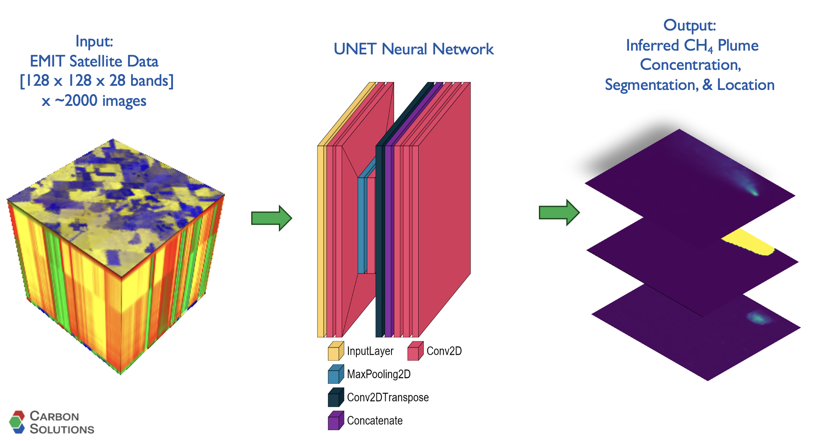
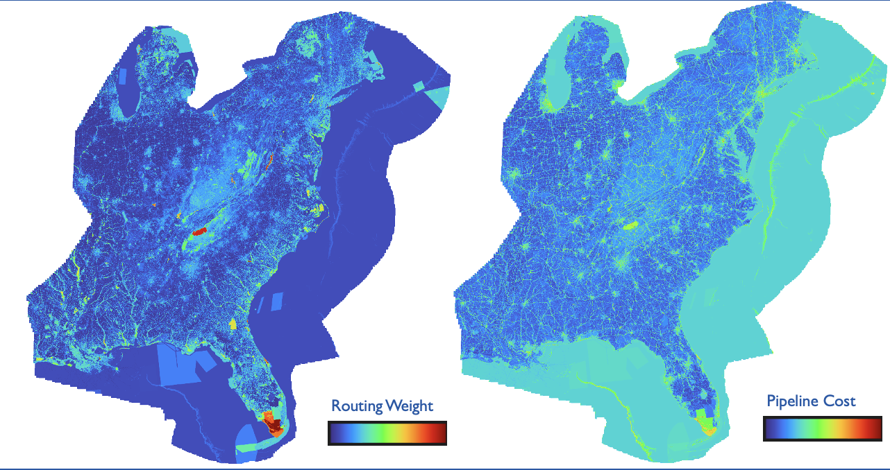
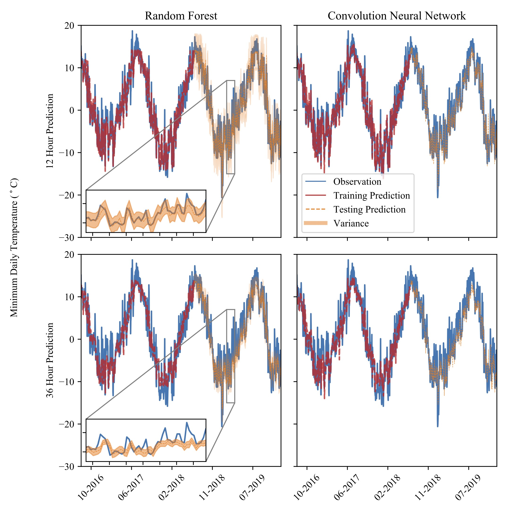
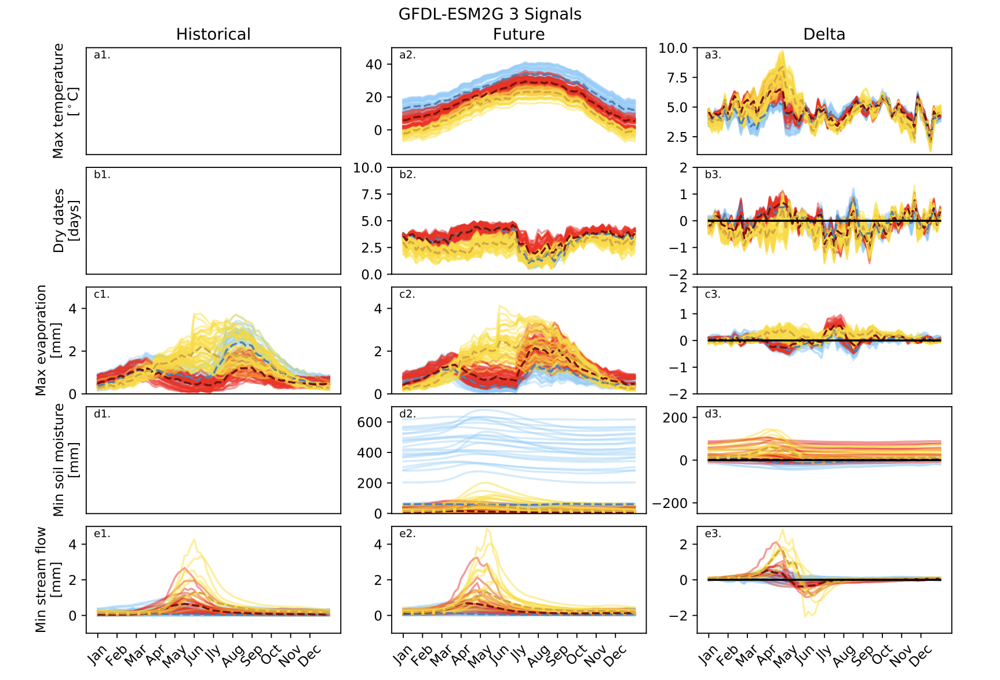
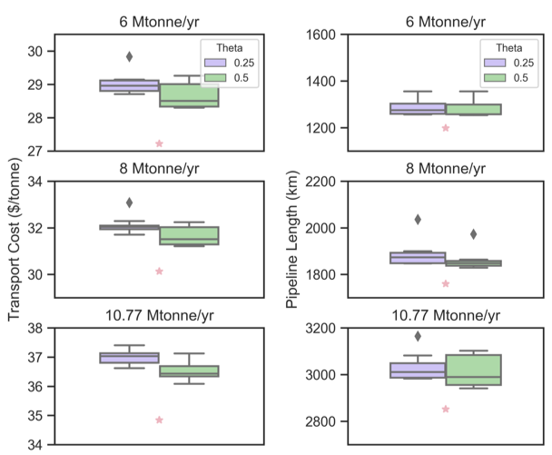
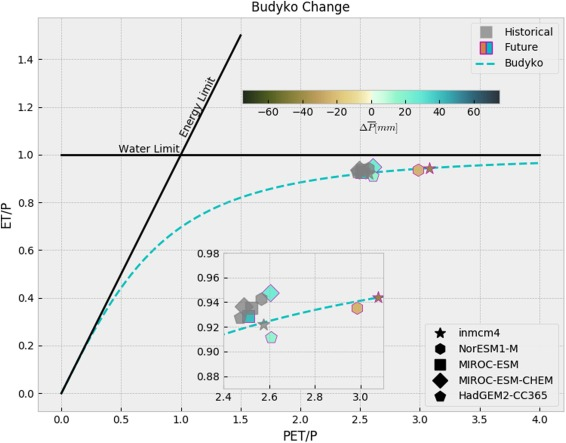

Projects

CostMAPPRO: Pipeline Routing for CO2 Transport:

Machine Learning for Frost Prediction:

Analyzing Watershed Behavior in a Changing Climate:

k-Shortest Paths for Pipeline Routing:

Changing Hydrology of the Pajarito Plateau under Climate Change:
